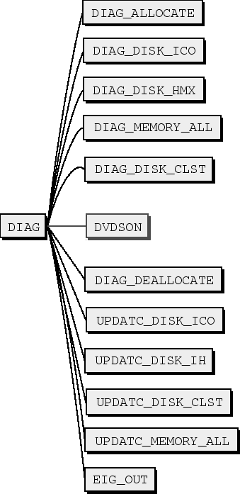
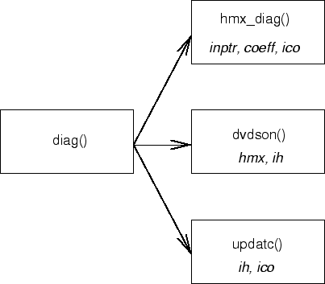

Next: Diagonalization
Up: Program Structure
Previous: Data initialization
Contents
The scf() algorithm is the most CPU intensive part
of the mchf program. It is an iterative process with
two sequential phases in each iteration: solving the
differential equation, then, finding the eigenvalue problem
6.10.
Figure 6.13:
Two phases of an scf() iteration: The eigenvalue
phase constructs the matrix, finds eigenvalues and updates
the coefficients. The differential equation phase updates
radial functions on each node.
|  |
The first phase solves the differential equation for each
radial function and finds the sets of radial functions
, Figure 6.14.
Figure 6.14:
Steps in finding the radial functions.
|  |
The routines applied to this phase are shown on Figure 6.15
Figure 6.15:
de() procedure. On each iteration diag(), de(), orthog() and
grange() are called.
 |
2001-10-11